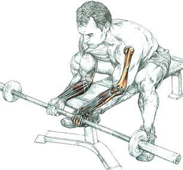
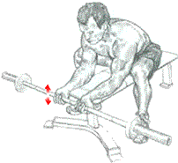

Сгибание запястий со штангой хватом снизу

Техника выполнения

Сидя. Предплечья на скамье. Гриф штанги держать в руках хватом снизу в "замок". Кисти слегка разогнуть:
- сделать, вдох, кисти согнуть кверху по направлению к себе;
- по окончанию движения сделать выдох.
Это упражнение тренирует лучевой сгибатель запястья, длинную ладонную мышцу, локтевой сгибатель запястья, а также глубокие поверхностные сгибатели пальцев, которые, несмотря на то что расположены глубоко, обычно составляют основную часть от общего объема работы сгибателей запястья.
источник: "Анатомия силовых упражнений." Фредерик Делавье